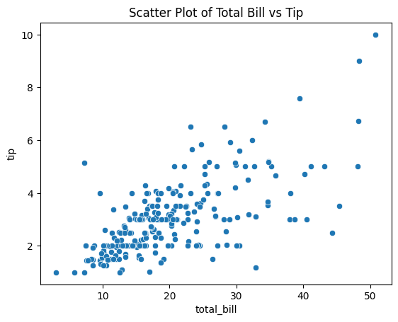
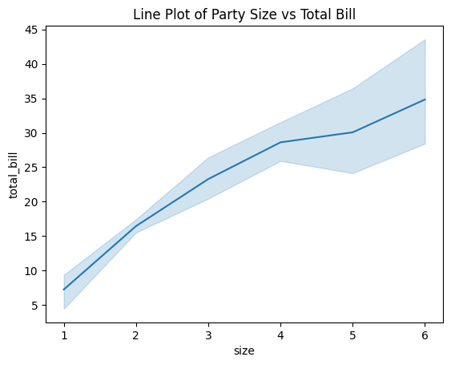
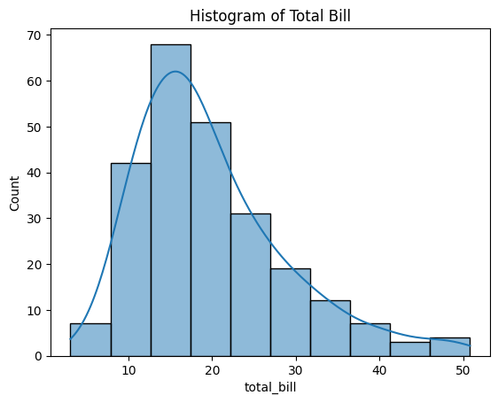
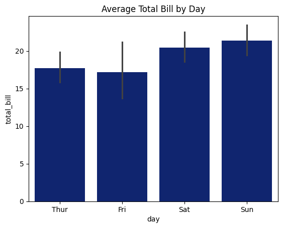
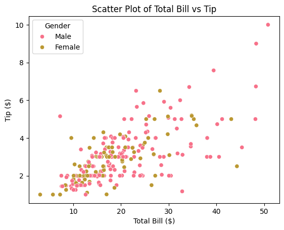
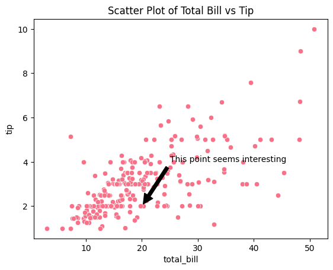
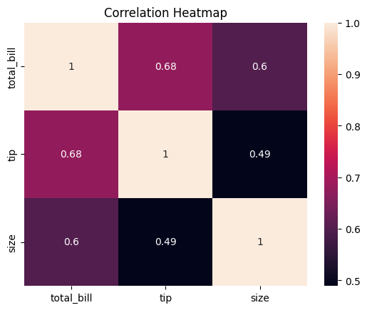

# install seaborn
!pip install seabornSeaborn Part 1
Seaborn is a Python data visualization library based on matplotlib. Seaborn makes it easy to create informative and attractive statistical graphics. We’ll cover basic plotting techniques and explore some of the functionalities Seaborn offers.
Installing Seaborn
Before we begin, make sure you have Seaborn installed. You can install it via pip if you haven’t already:
### Importing Seaborn and Other Libraries
import seaborn as sns
import matplotlib.pyplot as pltLoading Sample Dataset
Seaborn comes with some built-in datasets for practice. For this tutorial, we’ll use the “tips” dataset, which contains information about tips given in a restaurant.
tips = sns.load_dataset("tips")
### Basic Plotstips.head()| total_bill | tip | sex | smoker | day | time | size | |
|---|---|---|---|---|---|---|---|
| 0 | 16.99 | 1.01 | Female | No | Sun | Dinner | 2 |
| 1 | 10.34 | 1.66 | Male | No | Sun | Dinner | 3 |
| 2 | 21.01 | 3.50 | Male | No | Sun | Dinner | 3 |
| 3 | 23.68 | 3.31 | Male | No | Sun | Dinner | 2 |
| 4 | 24.59 | 3.61 | Female | No | Sun | Dinner | 4 |
Here are the columns typically found in the “tips” dataset:
- total_bill: Total bill amount (including tip).
- tip: Tip amount.
- sex: Gender of the person paying the bill (male or female).
- smoker: Whether the party included smokers (yes or no).
- day: The day of the week.
- time: Whether the meal was lunch or dinner.
- size: The size of the dining party (number of people).
1. Scatter Plot
sns.scatterplot(x='total_bill', y='tip', data=tips)
plt.title('Scatter Plot of Total Bill vs Tip')
plt.show()
2. Line Plot
sns.lineplot(x='size', y='total_bill', data=tips)
plt.title('Line Plot of Party Size vs Total Bill')
plt.show()
3. Histogram
sns.histplot(tips['total_bill'], bins=10, kde=True)
plt.title('Histogram of Total Bill')
plt.show()
4. Bar Plot
sns.barplot(x='size', y='total_bill', data=tips)
plt.title('Average Total Bill by Day')
plt.show()
Customizing Plots
1. Changing Color Palette
sns.set_palette("dark")
sns.barplot(x='day', y='total_bill', data=tips)
plt.title('Average Total Bill by Day')
plt.show()
2. Adding Labels and Legends
sns.scatterplot(x='total_bill', y='tip', hue='sex', data=tips)
plt.title('Scatter Plot of Total Bill vs Tip')
plt.xlabel('Total Bill ($)')
plt.ylabel('Tip ($)')
plt.legend(title='Gender')
plt.show()
3. Adding Annotations
sns.scatterplot(x='total_bill', y='tip', data=tips)
plt.title('Scatter Plot of Total Bill vs Tip')
plt.annotate('This point seems interesting', xy=(20, 2), xytext=(25, 4),
arrowprops=dict(facecolor='black', shrink=0.05))
plt.show()
Advanced Visualizations
1. Pair Plot
sns.pairplot(tips, hue='sex')
plt.savefig('plot.png')
plt.show()
2. Heatmap
# Exclude non-numeric columns from correlation calculation
numeric_cols = tips.select_dtypes(include=['float64', 'int64'])
correlation_matrix = numeric_cols.corr()
# Plotting the heatmap
sns.heatmap(correlation_matrix, annot=True)
plt.title('Correlation Heatmap')
plt.show()
3. Violin Plot
sns.violinplot(x='day', y='total_bill', data=tips, split=True)
plt.title('Violin Plot of Total Bill by Day and Gender')
plt.show()
Conclusion
Seaborn provides a high-level interface for drawing attractive and informative statistical graphics. This tutorial covered basic plotting techniques and some advanced visualizations. Experiment with different plot types and customization options to create visualizations tailored to your specific needs.